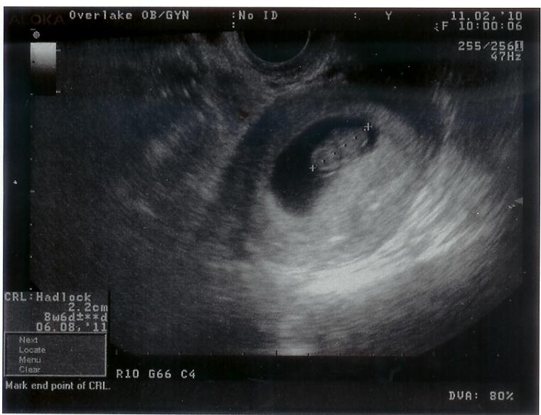

Welcome
Welcome to our baby site, counting down the days until this little bundle of joy comes into the world. Check back frequently, as we will be updating often!
Do you think it will be a boy or a girl? Submit your guess now!
June 5th, 2011 (39 weeks)
It has been a long time since we last updated, so be warned, this will be a long post. We've been really busy preparing for baby, and our whiteboard list continues to shrink. At first, Olivia had the entire board filled with tiny lettering, and each weekend (8 of them!) had a bunch of tasks. We slowly crossed out each weekend, but unforunately some stragglers were always left. So here we are at 39 weeks, and our list still looks like this:
Thank goodness for paternity leave! After the baby is born, I'll be taking off for four weeks to stay home with Olivia and the newborn. That is when we plan to finish all the whiteboard tasks...hopefully.
Olivia had a wonderful time at the baby shower, and it wouldn't have happened without all your help. Big thanks go out to Jackie for throwing an amazing shower; this baby is lucky to have an Aunt like you! It was great catching up with everyone, and all the gifts went a long way towards preparing us for baby. We also really appreciate the gifts from those of you who couldn't make it in person. All this love and support means the world to us.
Here is baby's first outfit from Aunt Jackie, in which we plan to take baby home from the hospital:
Many of you have been wondering what we plan to do for the baby's room. Well, we have been working really hard, and after many steps and many days of taping, painting, retaping, repainting, and touching up, we are finally done. We did a full wall mural of overlapping letters and numbers in various shades of green, plus a green stripe around the whole room:
Now we only have to get new carpet, buy all the furniture, decorate, and then we will be done! We hope this mural will be enjoyed by many children for years to come.
Baby update! Olivia has been going to the doctor weekly since the 36th week, and everything is going well. Three weeks ago there was no progress at all on the cervix front. After some really painful contractions two weeks ago, she was about 50% effaced. Just this last week, she was about 0.5 cm dilated. It is pretty safe to say baby isn't coming quite yet, although it could all happen any day. In doctor news, we are getting pretty low on personnel. Our main doctor broke her arm last week while mountain biking, and she had to have pins and a permanent metal plate installed. Needless to say, she is not ready for baby catching yet. The midwife we see when our doctor isn't available is also going to be out of town next week, so it is likely that some random doctor will be delivering our baby. We are finally taking a hospital tour on Monday, so we will see the whole childbirth center and get a feel for the place before the big day.
Speaking of which, we will have internet at the hospital, so we will definitely keep everyone updated and post pictures when baby comes. Olivia has also setup her skype id, oliviaobermiller, so just head over to skype.com to setup an account and download the software, so we can video chat for FREE. That way you can see baby, and baby will get to know all the people who love him. After you have installed Skype, click here to call Olivia. After you hear the news, try to get on Skype, and we will video chat with you instead of calling.
In case you were wondering how big baby has gotten, here is a picture of Olivia, and a picture of us on our anniversary last Thursday (6/2/2011):
Olivia and baby at 39 weeks
Olivia, Ian, and baby at 39 weeks
Also, here is a bonus photo from our Mother's day dinner at 36 weeks:
Olivia on Mother's Day at 36 weeks
April 1st, 2011 (30 weeks)
A couple weeks back Olivia took a glucose test for diabetes, which is apparently quite common among pregnant women. She had to drink a bottle of sickeningly sweet water and then have her blood drawn. Not fun. I didn't think she'd be able to get it all down, but she prevailed. We got the results in a few days, and thankfully Olivia does not have diabetes. However, she now needs to take iron supplements for the remainder of the pregnancy because her iron count was a bit low.
On our appointment this past Monday, baby's heartbeat was lower, only 140 BPM. Baby is about two and a half pounds now, and over seventeen inches long! It is starting to get cramped in there, and instead of little kicks, now we can really feel the baby stretch, roll, and jab Olivia's ribs and bladder. The movements are so drastic it really looks like a little person trying to get out now. We have quite the active baby! Olivia is also starting to have Braxton Hicks contractions from time to time, which are quite painful.
We've been spending loads of time lately figuring out everything we need. A lot of stuff has gone up on our registry, but we still have way more to figure out. One of the things we are still uncertain about is which type of cloth diapers we want to go with. We've already decided against disposable diapers, but it turns out there are tons of options for cloth diapers, and we are still sorting through them. Any advice you have on the balance between cost and convenience of the different types would be much appreciated.
Olivia is leaving Wednesday for the baby shower, and she is really excited to see everyone and have a fun time.
Finally, we decided we just had to know what the sex was, so we called the doctor up and asked: click here to see the gender.
February 27th, 2011 (25 weeks)
We had another doctor's appointment this past Tuesday, and baby is growing fast. Olivia is changing noticeably from week to week, and the baby now weighs between 1 1/2 to 2 pounds! As part of standard testing, Olivia has to take a diabetes test after drinking a bottle of glucose solution (sugar water). Apparently women can get diabetes during pregnancy even if they've never had it before.
Olivia's birthday is Wednesday, so we went out this weekend to Snoqualmie to play some penny slots and have an awesome steak dinner at the Woodman Lodge, a cute, historic restaurant in downtown Snoqualmie. We were stuffed on filet mignon and prime rib, rivalling even our dinner at El Gaucho. We plan to get out that way again to see the falls when the weather is nicer, but since it was below freezing on Saturday, we didn't stay outside much.
February 12th, 2011 (23 weeks)
Signed up for my paternity leave today. Get to spend a whole month with Olivia and baby for bonding, courtesy of work! I can take it any time in the first year, which left us with two real options. First would be to take it right away after baby is born, when Olivia could use help the most. Another option, which a friend of mine at work suggested, was to take the four weeks right at the end when the baby is almost a year old, and just take a long vacation/time off. We are going with the first option since I am stingy with vacation anyway and will have plenty to do what we want, and Olivia's need will be greatest in the first month.
In other news, baby is kicking all the time now, so hard that you can see the little kicks on the outside of Olivia's bump.
January 25th, 2011 (21 weeks)
Early to bed and early to rise...the baby has been waking Olivia up quite early lately (baby kicked hard just now to say hello). Today we went to our 20 week ultrasound. We didn't know what to expect, and we were surprised when they said it would take about an hour. It turns out that there is a lot to inspect on that little body. The ultrasound operator spent about half an hour looking at the heart, head, arms, legs, and just about every other part of the baby. She had us look at each other when she checked the sex, since I guess at this point it is pretty obvious. So only two people (the operator and the doctor who checked it after) know the sex of the baby, not even Olivia's OB knows. They also took some interesting 3D pictures, although most didn't turn out because the umbilical cord was in the way.
The baby was upside-down the whole time, with the head pressing directly on Olivia's bladder, which explains all the frequent trips to the restroom! To see all the different sides of baby, Olivia had to tilt back in the patient's chair in hopes that baby would turn to orient himself. Eventually she got all the shots she needed, and we have a really long video to cut down for you to see as well. At the end we found that everything is okay and normal, except that Olivia is a bit underweight and needs to eat more. That will probably be the last time we get to see baby before June, so now we just get to feel the kicks and punches for a while. Also, Olivia has been sore from all the growing, and since she wasn't supposed to go to the chiropractor, we finally went to see the physical therapist recommended by her doctor. He gave her a few stretches to do in the morning and before bed, so hopefully she won't be so sore.
January 13th, 2011 (19 weeks)
Olivia felt the baby move for the first time about a week ago. She was unsure about what exactly she was feeling, but after I felt the little kick for the first time today we were sure that it really was baby. To Olivia, it feels like popcorn popping inside of her. I thought it was like the baby was flicking her right in the belly. Both of us agreed that it is a little freaky, and it is as if she has an alien inside. Olivia was glad to find out that if she pokes her stomach, the baby will wake up and start moving. She now starts out every morning saying "wake up baby!" and prodding the little bump until she feels the baby move.
December 28th, 2010
Today we went in for our routine monthly appointment. Since our doctor was booked full, we met with a midwife/nurse practitioner instead. All we had scheduled was a check of the baby's heartbeat, which was normal at 150 BPM. But, our midwife was really nice, and asked if we wanted to see the baby really quickly. I think she enjoyed doing ultrasounds, because we had a fun time of it. The first shot we got was a nice side profile:
The baby was sleeping, and his arm was resting behind his head, much as his mother rests! The midwife prodded Olivia's stomach with the ultrasound head, and the baby woke up! He was opening and closing his mouth, and flailing his legs a bit. Apparently all the amniotic fluid gave him the hiccups, and we could see him go through the motions just like a big person. After being woken up, he turned his body toward the ultrasound, tucked up his knees in front of his body, and we couldn't see much more. It was great to see our baby when he looks more human and less alien, and the 20 week ultrasound we'll be getting in a month will look even better.
Aside from that, Olivia has been doing better, although she has the occasional headache, back aches, and has a tough time sleeping. We bought our first baby clothes this past week during some after-Christmas shopping, and we are starting to get into the mindset of buying stuff for baby.
December 16th, 2010
Olivia was able to stand the sight of uncooked food, and made delicious blueberry muffins this morning. Raw meat is still off the agenda, but at least she can rediscover her love for baking, just in time for the Christmas season!
November 29th, 2010
We went to the doctor today and got to hear the baby's heartbeat for the first time. It sounds a bit surreal at the fast 145 beats per minute, and it is really wierd to think that Olivia has two heartbeats right now! The doctor then announced "it's a boy!", but only according to another old-wives tale relating to the heartbeat. Thankfully we are no closer to knowing what the sex truly is. By this time Olivia's food cravings and anti-cravings were in full swing:
Food Olivia used to like:
- Cheeseburgers
- Sloppy Joes
- Italian food (pizza)
- Soda
Food Olivia likes more:
- Pickles
- Veggies
- Cereal and saltines
November 2nd, 2010
We decided to start trying for a baby in September of 2010. Olivia had done a lot of research, and read a statistic that said we only had a 20% chance of conceiving when we try. Well, it turns out that statistic couldn't be farther from the truth for us. Two weeks after we started trying, Olivia began getting what we would later realize were pregnancy symptoms. During a routine trip to see the doctor, he confirmed Olivia's suspicions, and to Ian's suprise, we were pregnant on our first try! Olivia thought just getting pregant would be the hardest part, but when the first trimester came into full swing, boy was she mistaken.

Our first ultrasound on November 2nd, 2010. The little peanut is less than an inch tall!
Our first ultrasound picture was an exiciting event. We finally got to see this little thing flutter around. It made the whole experience all the more real to us. Because Olivia was sick all the time, the doctor said, "it must be a girl". We are planning to wait till June to find out, so it will be a surprise for everyone!
{kind=link}
{kind=link}
{kind=link}
{kind=link}
{kind=link}
{kind=link}
{kind=link}
{kind=link}
{kind=link}
{kind=link}